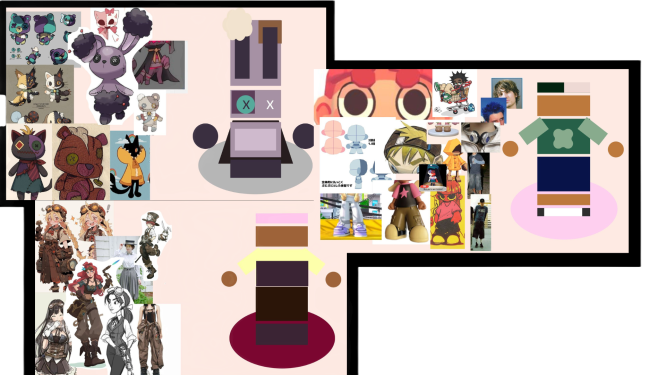
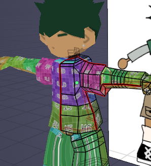
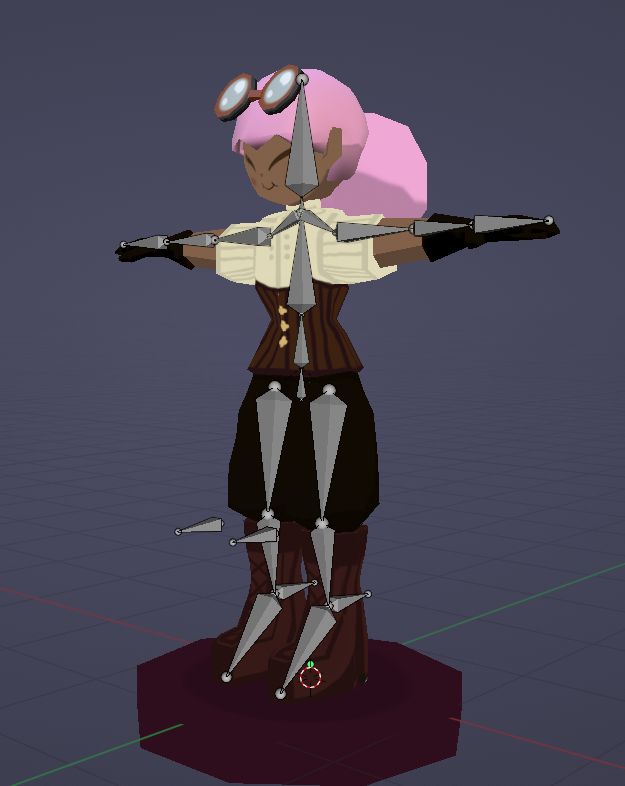
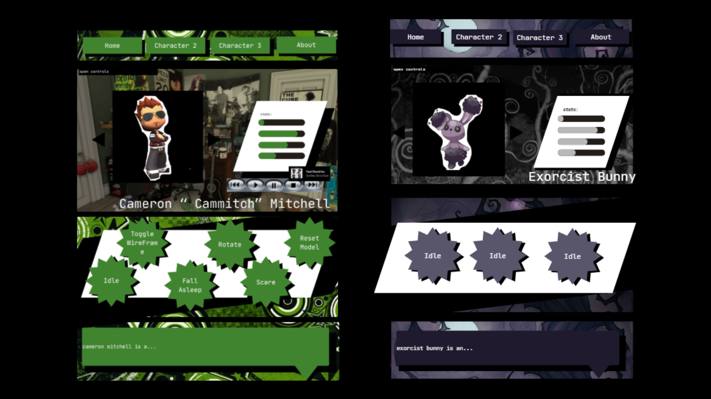
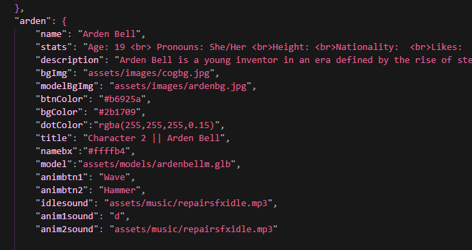
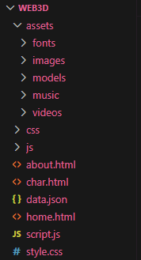

This project is an interactive website created to display my original 3d character models.
Before modelling, I gathered pinterest references of the clothing, colour palettes and inspirations to help define the character's visual style. I created a rough plan in Canva for each character. A main reference for the actual character models was @nupsume who creates low poly pixelated characters in blender.

Canva Character Design Plan
The models were created in Blender using low poly geometry techniques. Seam marking and UV unwrapping were used to prepare the model for texturing. Textures were painted in Blender to create a stylised look, while the additional face textures were created in GIMP.

Seaming and UV unwrapping
The characters were rigged using armatures and weight painting to support the animation. The final models were exported as GLTF/GLB files for Three.js compatability.

Blender Armature Example
The website was designed using a comic-inspired visual style to reflect the personality and themes of each original character. Different colour palettes, backgrounds, audio, and animations were used to give every character page its own identity while maintaining a consistent overall layout.

Webpage layout design in Canva
CSS and JavaScript were used to make the layouts responsive with interactive effects and transitions. Accessibility and usability were considered through the consistent navigation, readable font sizes, and clear spacing across different screen sizes.
Three.js was used to load and display the GLTF character models within the browser, allowing real-time rendering and interactive control over things like lighting and positioning within the environment. Character-specific content was loaded dynamically using JSON data, allowing models, backgrounds, colours, text, audio, and animations to change depending on the selected character. This reduced the need for hardcoded character pages which increased the flexibility of the project.

Json Code Snippet
A dynamic lighting system was also implemented using Hemisphere and Spot Lights. A graphical user interface was integrated to allow real-time control over the lighting parameters such as intensity, distance, angles, colour, and penumbra.
Audio clips were edited using Audacity and synchronised with the animations before being integrated into interactive animation buttons. Additional media like images and animated transitions were also embedded throughout the website to improve immersion and presentation.
Users can interact with the 3D models using OrbitControls to rotate and inspect the character from different angles. JavaScript buttons were implemented to trigger animations, switch camera views, and control different interactive scene elements like wireframing and rotation.
Hover and click animations and sound effects were added throughout the website to create an engaging experience.
The project was developed using HTML5, CSS, JavaScript, JSON, and Three.js. Assets were organised into structured folders to improve maintainability and workflow management.

Asset Folder Layout
- Created original low-poly 3D character models from scratch in Blender, using UV unwrapping and texture painting.
- Used rigging, armatures, and weight painting to create character animations.
- Implemented dynamic character content loading using JSON.
- Developed custom JavaScript systems for animation triggering, wireframe rendering, OrbitControls, camera switching, and audio integration.
- Integrated GLTF/GLB models into a Three.js web environment.
- Designed a fully responsive comic-inspired interface with interactive elements and media integration.
The application was tested locally using Visual Studio Code to ensure that models, audio, animations, and interactions loaded correctly throughout the website. Iterative testing was carried out in Microsoft edge to ensure correct rendering, responsive layouts, and stable interactions across different devices and screen sizes.
Feedback was gathered from peers during development. Based on this, adjustments were made to the layout and spacing of my home and about pages to improve the overall user experience.
The final project was uploaded to GitHub.
GitHub RepositoryWhat I Learned:
Through this project, I developed a strong understanding of Blender and the wider 3D model production pipeline, including modelling, UV unwrapping, texturing, rigging, and exporting assets for a web-based GLTF environment. I also improved my understanding of Three.js, JSON data systems, and interactive 3D applications.
Challenges:
One challenge encountered during development involved Blender driver-based facial rigs not functioning correctly after GLTF export. This required experimentation with alternative ideas and ultimately didn't end up being implemented. This improved my understanding of the compatibility limitations between Blender and Three.js.
Driver facial rigs in Blender demo video
Future Implementations:
If I was to continue this project, in future iterations I would implement a pixel shader effect using post-processing techniques in Three.js. This would allow the same stylised pixelated filter used in the looping character videos on the home and about page to be directly applied to the 3d models, creating a more consistent visual style accross the entire application.
This would involve exploring post-processing passes such as RenderPass or ShaderPass to apply custom visual effects to the scene in real time.
Three.js Pixel Shader